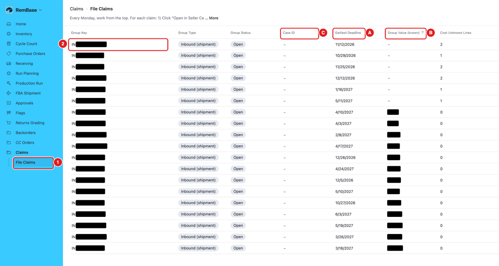
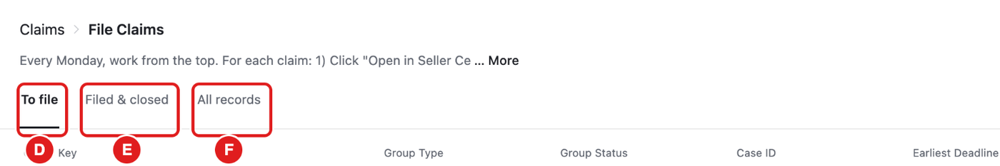
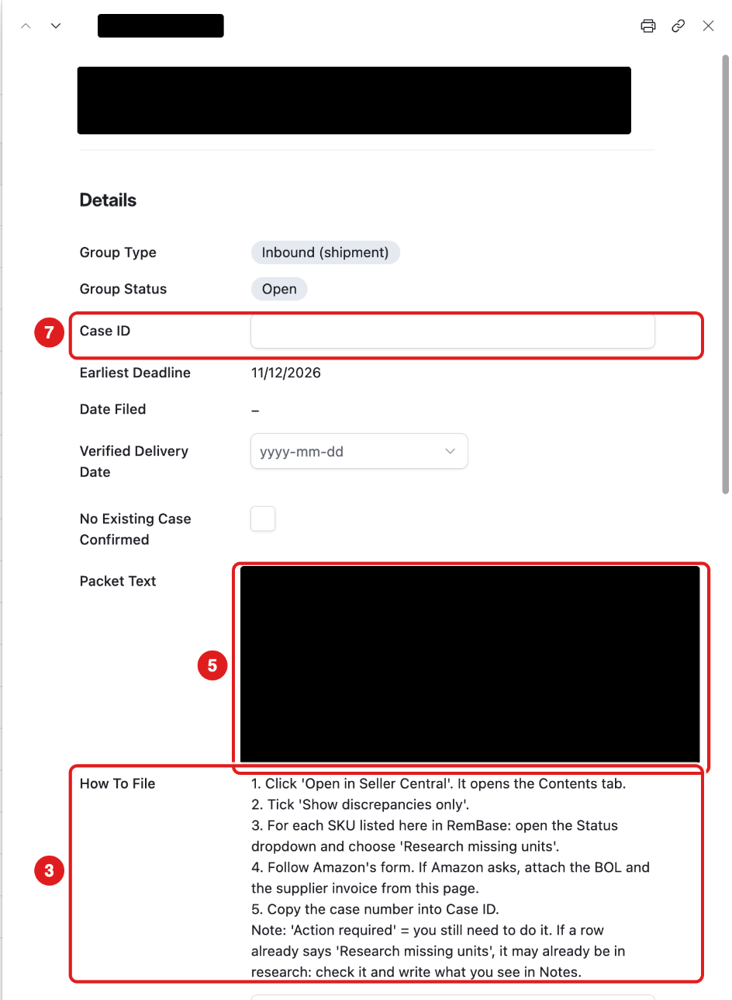
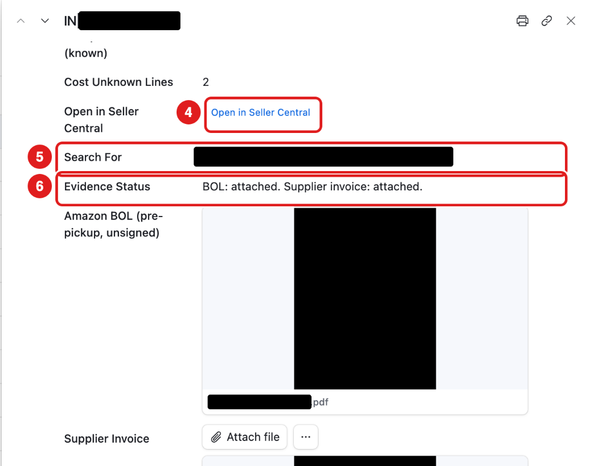

What this page is for
Sometimes Amazon loses or damages our units. For example, Amazon does not receive every unit in a shipment, or a unit is damaged in an Amazon warehouse. Amazon pays us back, but only if we file a claim before the deadline.
Claims → File Claims lists the claims we still need to file. RemBase finds them and prepares the text and the files for you.
Who uses it: Karly files the claims every Monday. Adam can also open it. If you need access, ask Adam.
Claims is real work now, not practice. These are real claims. You file each one in Amazon Seller Central. RemBase does not file it for you.
The list

- The To file tab shows only claims that are not filed yet. Work from the top.
- A – Earliest Deadline: file before this date.
- B – Group Value (known): about how much Amazon should pay back. Blank means the cost is not known yet. Still file it.
- C – Case ID: empty until you file.
- Cost Unknown Lines: how many lines in the claim have no cost yet.
The tabs

- D – To file: claims you still need to file. This tab opens first.
- E – Filed & closed: claims that are filed, reimbursed, denied or closed. To find a claim you already filed, open this tab.
- F – All records: every claim (Airtable’s own tab).
Task: file a claim (every Monday)
Click Claims in the menu. Click File Claims.
Start at the top of the list. Click a claim to open it.
Read How To File. Its steps are different for each type of claim. Follow them. (For a Defective dispute, see below.)

Click Open in Seller Central. Amazon’s page opens.

In Amazon, search for the number in Search For. Copy the Packet Text and paste it into Amazon’s form.
Look at Evidence Status. If Amazon asks for proof, attach the files from this page: the Amazon BOL and the Supplier Invoice (the original CANDIDATE file). Then submit the claim in Amazon.
Copy Amazon’s case number. Paste it into Case ID.


A supplier invoice named CANDIDATE – check was matched by RemBase. Check that it is the right invoice before you send it to Amazon:
- Supplier Invoice (highlighted, reference) has a copy of each CANDIDATE file. The matching lines are yellow, and a red banner says it is for reference only.
- Use the highlighted copy to check. Always send Amazon the original (the CANDIDATE file), never the HIGHLIGHTED copy.
- RemBase keeps credit memos and wrong invoices off this page.
Defective dispute claims
Sometimes Amazon grades one of our returned or warehouse units as defective. Then Amazon does not pay us back. If we think the unit was damaged while Amazon handled it, we ask Amazon to check the grading again.
- These claims have the Group Type Defective dispute. There is one claim for each item each month.
- There is no minimum value. File every one.
- The Packet Text is ready to paste into the Amazon support case.
To file one:
- Click Open in Seller Central on the claim. Amazon’s Get support page opens. Click Create new issue. Store: United States. Service: Selling on Amazon.
- Select My issue is not listed.
- Paste the Packet Text into the box.
- Amazon shows an automatic answer (“Policy Ineligibility”). Do not stop. Click Contact an associate, then Check warehouse damaged reimbursement status.
- Fill in only the FNSKU (it is in the Packet Text). Leave Removal order ID and Batch ID empty. Click Continue.
- Contact method: Email. Click Submit.
- Copy the case number into Case ID. You can also find it under Manage support cases. RemBase marks the claim Filed.
What you should see
- After you type the Case ID, RemBase sets the claim to Filed and fills in Date Filed by itself.
- The claim leaves To file. You find it under Filed & closed.
- When the list is empty, you are done for the week.
Fix a case number
- Wrong case number? Paste the right one into Case ID.
- The claim was not really filed? Delete the Case ID. The claim goes back to To file.
- Each case number belongs to one shipment. If Notes says DUPLICATE CASE ID, check which shipment the case is for.
Claim status
| Status | What it means |
|---|---|
| Open | Not filed yet. It is on the list. |
| Filed | Sent to Amazon. We wait for Amazon’s answer. |
| Partly reimbursed | Amazon paid back part of it. |
| Reimbursed | Amazon paid back all of it. |
| Denied | Amazon said no. |
| Closed | Nothing more to do. |
Common mistakes
- Skipping a claim because the value is blank. Still file it.
- Forgetting the Case ID. Without it, RemBase thinks the claim is not filed. It stays on the list.
- Missing the deadline. After the Earliest Deadline, Amazon does not pay.
- Sending the wrong invoice. Check every CANDIDATE – check file before you attach it.
- Sending the highlighted copy. Amazon gets the original CANDIDATE file only.